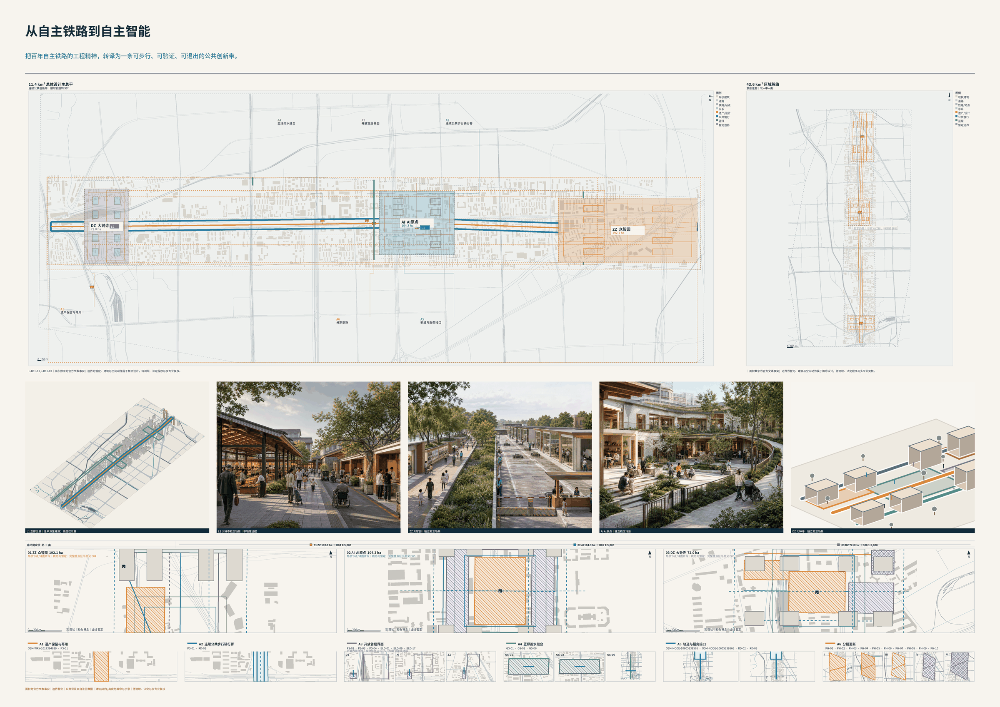
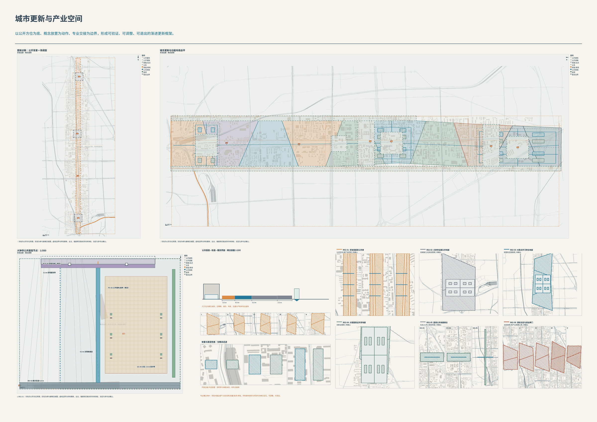
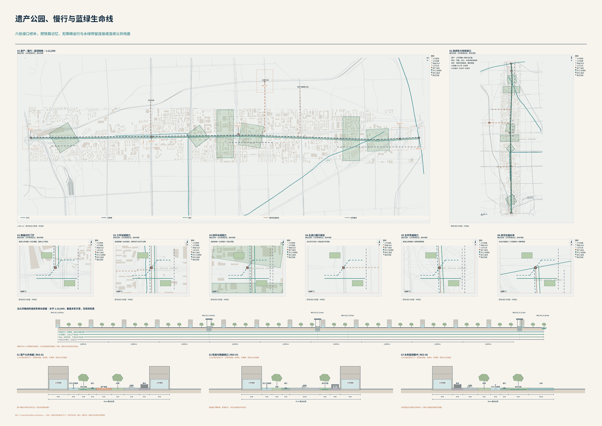
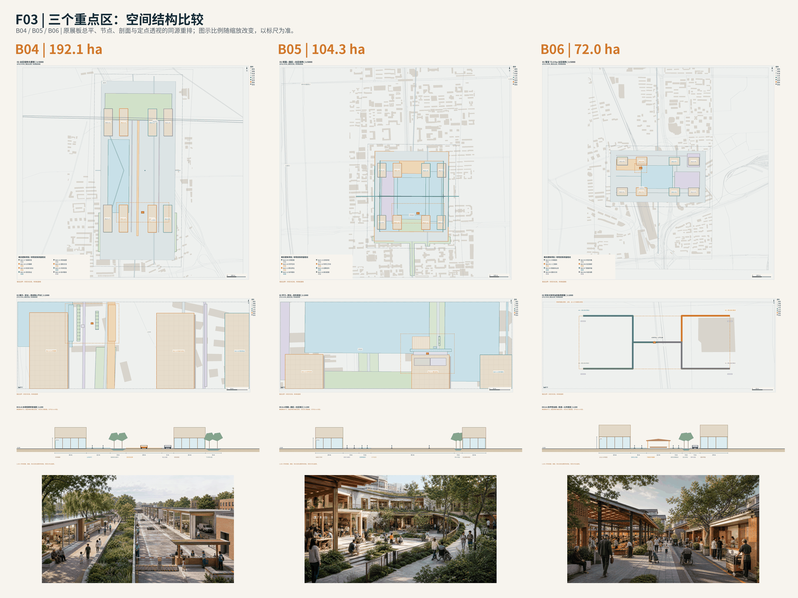
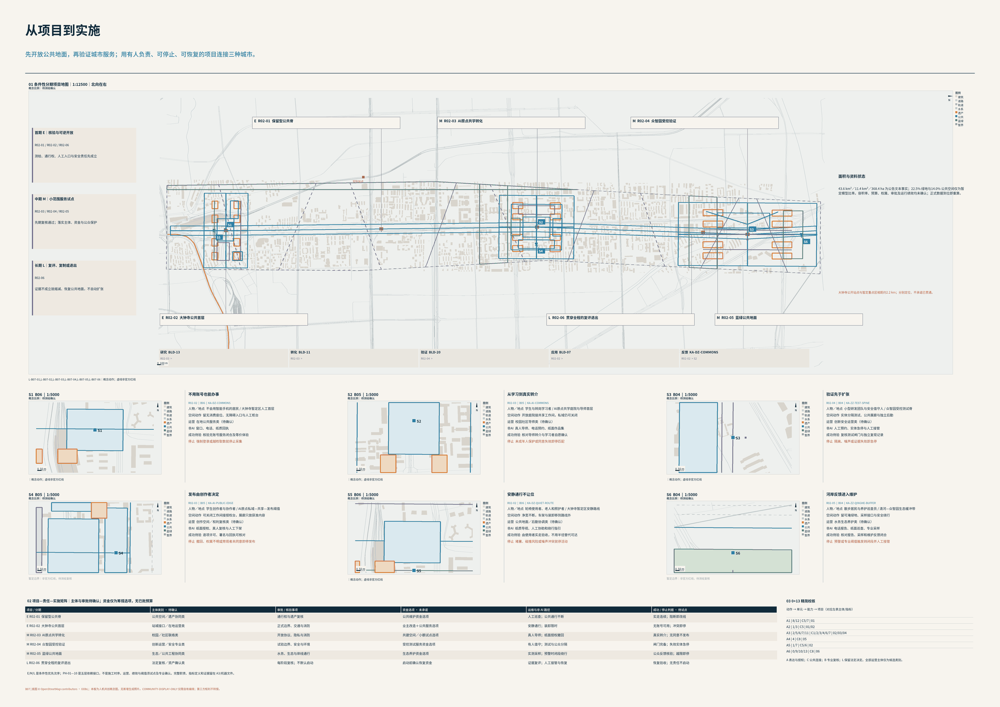

统筹研究范围
43.6 km²AI 创新生态、研究-转化-验证链与三区两翼关系。对应 B01、B07。
PROFESSIONAL-V2 / LOCAL OFFLINE EDITION / VISUAL
把百年自主铁路的工程精神，转译为一条可步行、可验证、可退出的公共创新带。
本页把图板、空间编号、任务与指标逐项连接。官方文本范围与参与者概念几何分开说明；已知模型值不等于官方统计、控规指标、工程批准或实际绩效。
京张遗产线成为一条连续的公共创新界面，连接三种不同的 AI 城区。
B01 / F01 是总体入口：遗产线、三区定位与六类空间动作；B02 看用地及更新，B03 看慢行与蓝绿，B04-B06 看详细节点，B07 看实施与停止条件。

以下范围面积来自官方文本任务，不把粗略多边形当作官方红线；368.4 ha 为三处必选重点区域文本面积之和。
直接读取 metrics.json 的几何复算值。known 只表示当前概念模型内可复算，confidence=low；不是官方统计、法定绿地率或已经兑现的公共开放承诺。
site_area_sqm | concept model / low confidence
area(transform(geometry/site_boundary.geojson#PROV-SITE-001, EPSG:4548))
green_ratio | concept model / low confidence
green_space.geojson / site_boundary.geojson
area(unary_union(transform(geometry/green_space.geojson[*], EPSG:4548))) / area(transform(geometry/site_boundary.geojson#PROV-SITE-001, EPSG:4548))
public_space_ratio | concept model / low confidence
public_space.geojson / site_boundary.geojson
area(unary_union(transform(area_features(geometry/public_space.geojson), EPSG:4548))) / area(transform(geometry/site_boundary.geojson#PROV-SITE-001, EPSG:4548))
模型面积与官方文本 11.4 km² 略有差异，来源于暂定多边形，不能替代正式测绘。容积率、无障碍实走连续性与运营绩效仍为 unknown，不填虚构数值。
以公开方位为底、概念放置为动作、专业交接为边界，形成可验证、可调整、可退出的渐进更新框架。
LU-* 概念功能分区与 PC-* 地块模型，把研发验证、近校转化、城市服务与公共首层相连接；图中保留/改造/插建/新建是可调整的设计类别，不是现状普查或拆迁决定。
land_use.geojson / parcels.geojson

24 个 BLD 编号逐项对应 B04-B06 图面；只说明概念空间载体及更新倾向，不由基底推断容积率、高度、总建筑面积、产权或审批。
| ID | 概念用途 | 更新倾向 | A0 |
|---|---|---|---|
| BLD-17 | 低碳研发 | 保留 | B04 |
| BLD-18 | 公共展廊 | 改造 | B04 |
| BLD-19 | 标准与安全 | 改造 | B04 |
| BLD-20 | 受控验证 | 插建 | B04 |
| BLD-21 | 研发组团 | 保留 | B04 |
| BLD-22 | 国际交流 | 改造 | B04 |
| BLD-23 | 共享实验 | 插建 | B04 |
| BLD-24 | 技术服务 | 新建 | B04 |
| BLD-09 | 日常配套 | 保留 | B05 |
| BLD-10 | 共学空间 | 改造 | B05 |
| BLD-11 | 孵化转化 | 改造 | B05 |
| BLD-12 | 协作服务 | 插建 | B05 |
| BLD-13 | 近校研发 | 保留 | B05 |
| BLD-14 | 导师工作坊 | 改造 | B05 |
| BLD-15 | 成果发布 | 插建 | B05 |
| BLD-16 | 居住配套 | 保留 | B05 |
| BLD-01 | 日常服务 | 保留 | B06 |
| BLD-02 | 人工服务 | 改造 | B06 |
| BLD-03 | 智能体业态 | 插建 | B06 |
| BLD-04 | 国际交流 | 新建 | B06 |
| BLD-05 | 时段市集 | 保留 | B06 |
| BLD-06 | 社区维修 | 改造 | B06 |
| BLD-07 | 智能终端 | 插建 | B06 |
| BLD-08 | 内容消费 | 新建 | B06 |
道路、铁路、站点与河流为已登记公开背景；轴线及绿地为参赛概念。断点为设计待核接口，并非已完成现场调查。

| ID | 接口与动作 | 启动前核验 |
|---|---|---|
| R03-01 | 南端记忆门厅 连续公共地面＋记忆铺装；服务止于侧边 | 核验南端通行权与遗产保护要求 |
| R03-02 | 三环站城接口 候选跨越＋站点接驳；保持车行与步行分隔 | 结构、净空与交管方案待专项核验 |
| R03-03 | 四环水绿接口 连续坡道＋分流骑行＋雨水花园 | 排水标高、无障碍坡度与结构待复核 |
| R03-04 | 五道口慢行接驳 站口步行优先＋侧边自行车停放 | 出入口、路口和无障碍实走核验 |
| R03-05 | 五环贯通接口 候选立体跨越＋双侧树荫等候 | 现状结构与净空未核验，不预设工程形式 |
| R03-06 | 清河北端水岸 滨水步道接口＋可淹绿地＋安静停留 | 水务、生态和岸线通行权先行核验 |
AI 原点的 5/10/15 分钟图按登记概念路网与 72 m/min 最短路径预算计算，不使用同心圆；信号、校园开放权与真实无障碍条件须实走。服务/物流与步行骑行在节点中分开。
清河、小月河为登记公开背景；GS-* 与 PS-* 为概念蓝绿和公共空间。B03 将滨水步行、雨水花园、树荫候行及安静停留接入六处接口；B04 分隔清河公共界面与受控测试，B05 连接共学庭院，B06 保留非商业通行。
B03 / F04 / B04-B06 / F03 / green_space.geojson / public_space.geojson
雨洪、退界、行洪能力与绿地分类未获专业确认；模型比例不是生态达标证明。公共空间合并去重只计面积要素，不将场景点和地标点计入面积。

192.1 ha | PROV-KEY-001
192.1 ha：清河与公共展廊连续开放，研发、测试、后勤分界运行。
L-ZZ-01 | B04
104.3 ha | PROV-KEY-002
104.3 ha：以学习庭院和连续慢环，把私域创作、协作转化与公共生活逐级连接。
L-AI-01 | B05
72.0 ha | PROV-KEY-003
72.0 ha：公共、商业、安静与后勤分层；实际站点四象限单独定位，绝不平移暂定边界。
L-DZ-01 | B06
大钟寺关键限制：PROV-KEY-003 暂定区中心距公开大钟寺站约 2193 m。B06 分别绘制暂定区公共首层与实际站点四象限提案，未平移边界，也未声称桥隧、站口或通达工程获批。
六个 R02 更新项目由 B02 定位、B07 衔接责任与分期。下列主体为候选责任类别，资金为选项，审批和预算均未获承诺。

| ID | 项目与定位 | 候选主体 / 运维 | 审批 / 指标 |
|---|---|---|---|
| R02-01 | 保留型公共脊 PS-01 | 公共空间／遗产协同类 人工巡查；公共通行不断 | 通行权与遗产复核 实走连续；阻断即改线 |
| R02-02 | 大钟寺公共首层 PS-02 | 站城接口／在地运营类 安静通行；装卸限时 | 正式边界、交通与消防 无账号可用；冲突即停 |
| R02-03 | AI原点共学转化 PS-03 | 校园／社区联络类 真人导师；纸面授权撤回 | 开放协议、隐私与消防 真实转介；无同意不发布 |
| R02-04 | 众智园受控验证 PS-04 | 创新运营／安全专业类 有人值守；测试与公众分隔 | 试验边界、安全与环境 闸门完备；失效实体急停 |
| R02-05 | 蓝绿公共地面 GS-01 | 生态／公共工程协同类 实测采样；预警时闭段绕行 | 水务、生态与岸线通行 公众反馈核验；越限即停 |
| R02-06 | 贯穿全程的复评退出 PH-09 | 法定复核／资产确认类 证据复评；人工接管与恢复 | 每阶段复核；不默认启动 恢复验收；无责任不启动 |
六个场景都有明确人物、地点、空间动作、候选运营者、非 AI 等价入口与停止条件；不是已部署服务或自动行政决定。
不会用智能手机的居民 / 大钟寺暂定区人工首层
留无消费座位、无障碍入口与人工柜台
在地公共服务类（待确认）
非 AI: 窗口、电话、纸质回执
成功: 核验无账号服务闭合及等价体验
停止: 强制登录或越权取数就停止采集
学生与转岗学习者 / AI原点共学庭院与导师首层
开放庭院接共享工作间，私域仍可关闭
校园社区导师类（待确认）
非 AI: 真人导师、电话预约、纸面作品集
成功: 核对导师转介与学习者自愿确认
停止: 未成年人保护或同意失效即停匹配
小型研发团队与安全值守人 / 众智园受控测试脊
实体分隔测试、公共展廊与独立后勤
创新安全运营类（待确认）
非 AI: 人工预约、实体急停与人工接管
成功: 复核测试闸门与独立复现记录
停止: 隔离、噪声或证据失效即急停
学生创作者与协作者 / AI原点私域-共享-发布阈值
可关闭工作间接授权台，展廊只放获准内容
创作空间／权利复核类（待确认）
非 AI: 纸面授权、真人复核与人工下架
成功: 逐项许可、署名与回执可核对
停止: 撤回、权属不明或旁观者未同意即停发布
轮椅使用者、老人和照护者 / 大钟寺暂定区安静路线
净宽不断，车架与装卸移到路线外
公共地面／后勤协调类（待确认）
非 AI: 纸质导视、人工协助和绕行指引
成功: 由使用者实走验收，不用半径替代可达
停止: 堵塞、碰撞风险或噪声冲突就停活动
散步居民与养护巡查员 / 清河-众智园生态缓冲带
留可淹绿地、采样接口与安全绕行
水务生态养护类（待确认）
非 AI: 电话报告、纸面巡查、专业采样
成功: 核对报告、采样和维护反馈闭合
停止: 预警或专业阈值触发则闭段并人工接管
真实问题是产业更新和公共空间改变不能只由开发与技术主体内部决定。Decidim把线上提案、讨论、支持、线下会议与进度追踪放在同一可复用的开源参与平台。京张可转译为C只维护公开议题、责任与状态，纸面/社区会议与数字入口共用事项号；不能照搬当地规划、产权和政治程序，也不能把在线人数当作代表性。进入AI原点社区、大钟寺更新协商和SC-FINAL-11。
[source:CASE-BARCELONA-DECIDIM]
真实问题是智慧城市容易从宏大系统出发，却不能证明是否改善日常生活。该项目由城市、企业、居民和研究者在真实城区共同开展小规模试验，并用“每天多一小时”把技术价值拉回居民时间。京张可转译为低干扰、可逆、有停止条件的场景闸门和居民时间/任务完成指标；不能把试验成功直接扩大成永久部署，也不能用参观热度替代真实效果。进入小月河场景赋能翼、日常公共空间和SC-FINAL-09、SC-FINAL-12。
[source:CASE-HELSINKI-KALASATAMA]
真实问题是产业、大学、社区和城区运营常由彼此隔离的系统建设。榜鹅以产业园与大学邻接、开放数字平台和数字孪生支持跨系统运营与安全测试。京张可转译为接口化城市底座、隔离测试环境、真实运行前的模拟和产学协同；不能照搬集中采集、无边界实时数据或生物识别入口，任何数据调用仍须最小必要、逐项授权和具责主体。进入众智园全栈验证、AI原点学习到工作和SC-FINAL-06、SC-FINAL-10。
[source:CASE-SINGAPORE-PDD]
真实问题是数字内容和信息产业集聚不能只靠楼宇，还需要明确的基础设施、企业准入、公共支持和持续运营责任。首尔以地方条例界定园区、核心产业和支持职责。京张可转译为“空间载体+责任目录+运营规则”同时设计，以及大钟寺的数字内容、智能消费和企业服务组合；不能照搬其产业目录、土地开发、招商补贴或政府承诺。进入大钟寺AI产业聚集区、企业全周期服务和SC-FINAL-06。
[source:CASE-SEOUL-DMC]
真实问题是高校、实验室、大企业、创业者与城区生活若各自成岛，资源密度不会自动转成创新。巴黎萨克雷通过城市校园、创新场所网络、科研产业连接、公共交通和自然农业保护共同组织生态。京张可转译为中关村B侧专业网络、众智园工程验证与多类创新场所共享目录，同时把水、生态和生活质量作为硬约束；不能照搬大尺度新区、国际机场区位、投资规模或绿地开发条件。进入众智园、中关村科技服务翼和跨区专业侧援。
[source:CASE-PARIS-SACLAY]
真实问题是技术伙伴提出城市级数据和空间方案时，公共权力、隐私、数据治理、项目范围与民主问责可能失配。Waterfront Toronto设置独立数字策略顾问组，项目退出后仍把政府应处于治理中心、数字创新须接受民主问责作为遗产。京张可转译为传感、模型和平台进入公共空间前的职权/数据/模型闸门与独立复核；不能照搬“城市数据”概念、让技术供应商代替政府，或把退出原因简化成单一隐私争议。进入全带能力8、SC-FINAL-10和SC-FINAL-11。
[source:CASE-TORONTO-QUAYSIDE]
目标是不用学习复杂AI也能办成公共服务、投诉和照护任务；障碍是术语、验证码、跨部门转接和听视能力变化；非AI路径为电话、窗口、社区、纸面及依法代理；只处理本人逐项提供的材料，不建立永久能力分；成功是一次建案、状态可懂、真人可接管；最坏失败是被算法拒绝且找不到具责人员；对应SC-FINAL-01、SC-FINAL-02、SC-FINAL-08。
目标是独立或在自选帮助下连续完成出行、服务和公共参与；障碍是断裂盲道/坡道、信息格式单一和系统默认替代本人；非AI路径为无障碍电话、现场服务、纸面/大字/手语或依法代理；辅助需求按任务最小保存且可撤回；成功是等价结果而非只“提供入口”；最坏失败是系统显示可达而现场不可达；对应SC-FINAL-05、SC-FINAL-09、SC-FINAL-10。
目标是把学习、研究和创意接到真实验证、合作与机会；障碍是资源分散、作品来源不清和未成年人/校园边界；非AI路径为导师、学校窗口、图书馆和线下实验；作品默认私域并区分本人、第三方与AI贡献；成功是可解释匹配、可携带成果和失败反馈；最坏失败是被永久标签或作品被越权训练；对应SC-FINAL-03、SC-FINAL-07。
目标是用一句话找到真实办理、采购、用工和经营帮助；障碍是多平台重复填报、机会真假和工作时间不足；非AI路径为企业窗口、商会/社区服务和具责顾问；商业秘密与劳动数据分舱且不形成企业/人才总分；成功是首次路由准确、材料少重复和能退出；最坏失败是Agent代替招聘、融资、许可或采购决定；对应SC-FINAL-04、SC-FINAL-06、SC-FINAL-11。
目标是在自主可替换技术栈上完成测试、复现、合规和市场连接；障碍是算力/工具锁定、测试场责任不清和合规成本；非AI路径为专业评审会、纸面测试计划和人工验收；代码、模型、数据和商业秘密按合同分舱；成功是跨栈复现、闸门齐全和负面结果可留；最坏失败是Demo越级进入真人/实体环境；对应SC-FINAL-06、SC-FINAL-07、SC-FINAL-10。
目标是把居民问题送到真正责任主体并能解释等待、冲突和结案；障碍是目录变化、跨部门交接、线下记录和应急信息不一致；非AI路径为值班电话、纸面责任簿、现场会议和人工指挥；只使用职责所需最小信息并保留来源/版本；成功是交接闭环、少数意见保留和离线恢复可对账；最坏失败是责任被错误归因；C不得审批，也不得承担应急指挥；对应SC-FINAL-01、SC-FINAL-08、SC-FINAL-11、SC-FINAL-12。
以下十二张正式卡与 B07 六个典型空间案例是索引与节选关系，不以六张节选替代十二张完整责任链。
人物PERSONA-01/06；空间为社区-街镇；触发是纸面投诉错投。A在本人确认后转录，C查公开责任目录并保留原件，B做无障碍/专业核验，L受理、决定和救济；七环从表达走到交付/学习；纸面、电话、窗口与Agent共号；只保存投诉必要信息；指标为首次路由、到期回应和救济闭环；错投不得自动结案，可人工纠偏、申诉和撤回非必要副本；后续进入服务节点、责任图和metrics-evidence。
人物PERSONA-01/02；空间为家庭-社区-医疗网络；触发是居民描述健康/照护需求。A只整理本人表达不诊断，C连接公开服务目录，医疗B复核，紧急救援与法定决定由L；电话、社区医生、窗口和线下急救与Agent并行；健康数据逐项授权、最短保存；指标为转介完成、人工接管和非AI等价；模型不确定或危险信号立即停止建议并转人工；后续进入公共服务节点和应急接口。
人物PERSONA-03；空间为校园-社区-园区；触发是学习者提交能力/作品和目标。A管理本人作品与授权，C匹配公开课程/机会，教育/劳动/IP B复核，录取、处分和法定许可由L；学校窗口、导师和线下活动并行；未成年人信息与作品默认私域；指标为解释完整、转化和可携带；禁止永久能力分，匹配失败保留理由、纠错与退出；后续进入AI原点学习节点和场景卡图。
人物PERSONA-01/04/06；空间为楼栋-小区；触发是漏水、噪声、无障碍或公共设施问题。A整理证据与住户选择，C路由物业/街镇/专业主体，建筑/消防/法律B核验，L保留行政决定；电话、值班室、纸面与现场会并行；不建立住户信用分；指标为到场核验、状态准确和恢复闭环；结构/消防风险立即转专业，争议可申诉；后续进入建筑、约束和分期图层接口。
人物PERSONA-02；空间为站口-道路-公共空间-目的地；触发是指定时段的真实出行。A保存本人偏好，C组合权威交通/设施状态，交通与无障碍B现场核验，管制和救援由L；电话、人工问询、纸面路线与Agent并行；位置只在行程必要时使用；指标为全程完成、断点和接管；现场与数据冲突时以安全人工核验为准并报告断点；后续进入roads/public_space和mobility-bluegreen。
人物PERSONA-04/05；空间为个人-园区-三区两翼；触发是一句话需求或能力。A管理本人材料/报价授权，C匹配公开机会与B侧服务，合同/劳动/财税/IP/安全B复核，采购、许可、融资和争议由L/具责主体；企业窗口、专业会谈和线下路演并行；商业秘密分舱；指标为首次路由、首次付费任务和退出恢复；禁止虚假机会与Agent最终决定；后续进入产业节点、项目清单和land-use-structure。
人物PERSONA-03/05；空间为个人私域-可信会谈-公共展示；触发是保存、合作或授权创意。A保留原话、版本和逐项许可，C只验证请求方与路由，IP/合同/个人信息B复核；裁判与法定救济由L；纸面封存、线下见证和人工合同并行；区分本人/第三方/AI贡献；指标为来源、许可字段、使用回执和撤回通知；存证不等于确权，未经授权不得训练/公开；后续进入展示节点、版权说明和证据链图。
人物覆盖全部画像；空间为城市-片区-社区-设施端；触发是权威预警和多系统失效。A展示本人需要与离线指引，C仅传播授权信息/同步状态，消防水务医疗通信等B核验；预警、指挥、疏散和救援优先级由L；广播、电话、社区、纸面、备用无线和人工传令并行；应急最小数据限时失效；指标为多通道可达、关键服务连续、人工接管和恢复对账；冲突指令升级L且纸面记录不被恢复系统覆盖；后续进入constraints/phasing和韧性图。
人物PERSONA-02/06；空间为道路-站点-公共空间；触发是现场盲道/坡道断点。A按本人选择提交照片、口述或纸面，C送达真实权属/责任主体并公开状态，交通/无障碍/工程B现场核验，建设和执法决定由L；不提供定位仍可报具体地标；指标为核验、理由、修复和复测；自动图像识别只作线索，误报可纠正且不保存人脸；后续进入roads/public_space与key-areas图。
人物PERSONA-02/04/05；空间为受控测试场-公共界面；触发是机器人近失事故。窄保护联锁只在六条件满足时急停，A帮助受影响人表达，C封存事件状态/路由，安全/工程/医疗/法律B核验；封控、救援、责任和复运由L；现场急停、电话和人工处置优先；只保留事件必要证据；指标为停止、接管、通报和复验；不得以无伤亡掩盖险情，未完成复核不复运；后续进入测试节点、constraints和风险图。
人物PERSONA-01/04/06；空间为社区-重点区公共空间；触发是改造方案引发分歧。A帮助本人理解并提交意见，C合并议题但不抹平少数意见，规划/交通/无障碍/运营B评估，正式程序和决定由L；线下会议、纸面、公示栏、电话和Agent并行；公开意见前逐项确认署名/匿名；指标为参与可达、少数意见回应、理由完整和承诺跟踪；多数票不能绕过权利/安全，决定可复核申诉；后续进入public_space、key_areas和A0议题板。
人物PERSONA-06及周边居民；空间为清河/小月河-社区-专业网络；触发是异味、死鱼、漂浮物或生态变化报告。A按本人选择保存观察，C聚类线索/路由，生态水务检测B现场采样，执法、预警和工程决定由L；电话、巡查、纸面和现场报告并行；照片位置最小化且去除无关人像；指标为专业核验、阈值行动、养护反馈和长期复验；模型不得冒充监测，误报不惩罚居民，未达修复证据不得结案；后续进入green_space/constraints和生态图。
v0.4-v0.6的18张候选卡保留来源意义。以下三张把第六能力已确定的产业测试对象展开为可执行的验证子卡，分别深化SC-FINAL-06和SC-FINAL-10，不改写十二张去重正式卡的口径，更不计为新增部署或已完成实验。三卡共用“离线/仿真-隔离或封闭-受控真人/实体-有限运行”四级闸门；进入下一级前必须有场地使用权、具责运营者、适用专业/法定条件、合法输入、人工接管和撤场恢复方案。以下空间落点、目标和职责均为概念建议，真实基线、阈值确认、结果与运营绩效仍待测。
众智园B04概念受控验证后场；清权后的结果才进入公共展廊。面向PERSONA-03/05研究者、开发者和创业团队，连接SC-FINAL-06。
可替换的模型、工具接口、权限与交付链；输入为版本锁定的代码/配置、具有使用权或合成的样例、封存任务集、人工基线及故障用例，不接入未经授权的生产系统。
同一版本与输入可重放，切换技术接口仍有可解释的结果和迁移记录；权限拒绝、工具故障与不确定输出均能转人工。逐项记录任务完成、复现一致性、越权请求、人工接管和退出恢复，验收阈值须在试验前由专业评审锁定，当前不填达成绩效。
候选园区测试运营者负责场地与台账，研发团队负责版本和证据，数据/网安/AI安全及行业专业人员独立复核；采购、许可与争议仍由具责主体或L决定。
输入权利不明、无法复现、越权调用或失去回滚能力即停止该轮，隔离凭据并保存必要日志；转为离线人工操作、纸面测试单和专业验收，不以演示成功代替准入。
[source:CHECKPOINT-V06]
众智园B04概念测试后场及其公众/测试分界，深化SC-FINAL-10；PERSONA-02/04/05的可达、安全与工作需求作为验收条件，公众通道不是默认试验场。
在经核验封闭场地内的定点运输、避障、交接和返回任务；输入为实测后确认的试验地图、边界与障碍布置、授权或合成场景、任务清单、急停/接管记录表，不把暂定总平直接作为机器人控制地图。
在批准的试验边界内完成任务并保留轨迹和交接证据；出现人员、障碍、通信失效或定位不确定时，按事先验证的安全策略停止或交由现场负责人接管。记录边界偏离、近失事件、停止/接管与复验结果，不宣称已获得公共道路或人群环境运行许可。
候选试验场运营者与现场安全负责人控制准入和停机，机器人团队提供技术证据，工程、无障碍、消防/医疗等适用专业人员复核；封控、救援与复运中的法定事项由L保留。
边界被突破、出现险情、急停链失效或现场无人负责即停止实体试验，人员隔离后按预案处置；以人工搬运、人工引导或仿真完成等价任务，未复核不复运，负面结果不得删去。
[source:CHECKPOINT-V06] [source:HAIDIAN-SUPER-TESTFIELD-2026]
大钟寺B06概念公共首层人工柜台、AI原点B05转化服务前台；面向PERSONA-01/04/06居民、小店经营者和社区工作者，深化SC-FINAL-06并衔接SC-FINAL-01。
一句话需求到材料整理、权威目录匹配、人工核验和交付回执的完整任务；输入为带版本的公开事项/企业服务目录、用户自选最少材料、匿名或合成评估案件及同题人工办理基线。
同一事项号在线上、电话、柜台和纸面之间接续；材料、路由和回执可由具责人员核对，拒绝AI者获得等价服务。记录首次路由准确性、重复材料、办理耗时、人工升级和退出恢复；不将任务交付等同审批、融资、采购中标或经营收益。
候选社区/企业服务运营者守住柜台和台账，服务团队负责目录更新，劳动、合同、财税、IP和无障碍专业人员按事项复核；资格、不利决定、许可与救济保留给L或具责主体。
目录冲突、错误拒绝、材料泄露或当事人撤回授权即停止自动处理并通知负责人；保留原件，以电话、柜台、纸面或专业会谈完成纠偏、申诉和交付，不建立永久个人/企业评分。
[source:CHECKPOINT-V06]
作为自主工程、开源发布与普通人思想起点的公共节点，提供小型发布、版本存档、纸面/无障碍表达和贡献者自选署名；不是巨型纪念物或官方授牌。运营依靠轮换策展、社区/校园共管和版权清单；拒绝数字记录仍可参与。选址须待历史价值、公共可达、权属、消防和人流专业核验。
作为居民、开发者、专业人员和法定主体共同观察“可测试、可停止、可回退”的透明界面，展示正负结果、人工接管、数据范围和退出状态；不做常态人脸采集或未授权真人实验。运营按风险级开放，失败先于宣传，场地须有安全隔离、无障碍、急停、医疗和撤场条件；选址待正式空间与专业审查。
以京张工程史、普通人日常与当代创新的连续叙事连接遗址公园、社区和创新节点，采用声音、文字、模型和可撤回的居民贡献，不用历史照片和口号替代空间设计。运营包含版权/肖像清权、轮换维护、离线讲解和无障碍导览；任何固定设施须服从文保、铁路、水务、生态和公共空间程序。
以下按未来一个完整运营年的Q1-Q4组织，并不表示2026年已经举办、已确定日期或政府活动承诺。活动以场景开放、开发者社区、居民参与、公共体验、国际传播、招引转化和维护审计形成循环；任何一项都先保留不参加权、非数字入口、居民日常、无障碍、消防、版权和活动后恢复。主办、运营者、场地权利、资金与采购尚待确认，条件不齐则延期、缩小范围或改为非现场交流。
| Q | 主题/场所 | 开放产品与转化凭据 | 候选责任与进入条件 |
|---|---|---|---|
| Q1 | 开源复现与真实问题征集季；AI原点共学界面、众智园验证后场 | 可匿名/纸面提交的需求册、清权任务集、版本锁定的复现计划；需求不自动转成项目 | 校园/园区运营候选团队、社区工作者与IP/数据专业人员；先核输入权利、场地与非AI参与 |
| Q2 | 安全验证与城市试验季；众智园受控测试后场 | 三张产业验证卡的分级试验、正负结果记录和人工接管演练；仅通过前级门槛的对象进入下一阶段 | 候选试验运营者、现场安全负责人、行业与适用法定主体；未获准不进入公共人群环境 |
| Q3 | 公共创新与京张文化季；遗址记忆段、大钟寺公共首层 | 清权开源发布、居民自愿贡献展、线下讲解和可分段的公共体验路线；不收集默认人脸/声音数据 | 公共空间/文化运营候选团队、社区与无障碍人员；先核文保、通行、消防和撤展恢复 |
| Q4 | 国际交流、成果转化与年度复盘季；AI原点前台、众智园公共展廊与专业网络 | 双语清权案例包、独立复验结果、自愿专业对接、依法签约后的回访及年度公开复盘；不许诺采购、投资或招商数量 | 候选社区/园区运营者、开发者社群及法律/IP/国际交流专业人员；未复验或未清权的结果不作招引宣传 |
每周一次开发者答疑/复现门诊、一次居民非数字意见接待，由候选园区/社区运营团队联同专业人员轮值；每月一次候选场景开放/关闭评审、一次无障碍与设施维护检查、一次仅在已确认安全及权利边界内的公众体验日。纸面、电话与现场接待共用问题编号，拒绝数字参与不失去服务；无人负责、急停/恢复条件不足或影响日常通行时取消现场活动，改为说明会或个别人工服务。
候选分段路线为“大钟寺人工首层-京张工程记忆段-AI原点共学庭院-众智园公共展廊/清河界面”，按B03的站口、通行权、连续无障碍和天气条件核验后分段开放，不把概念连线写成现状可达承诺。国际传播使用同一经清权的中英版本、可解释试验方法和正负结果；居民贡献可实名、化名或不署名并保留撤回路径。
需求建档（允许匿名与纸面） > 权利/场地/职责核验 > 版本化试验计划 > 独立复验与负面结果 > 清权公开与自愿专业对接 > 由具责主体进行合同/许可审查 > 交付回访、维护和年度复盘。未通过验证不得转为招商成功或规模化运行宣传；复现、非AI等价、投诉回应、接管和恢复是持续指标，真实运行值仍待采集。重大缺口触发暂停、人工接管、撤场和修复后复验，不以活动人数代替公共价值。
同源完整正文：proposal.md
逐项列出 compliance_matrix.json 中的 23 条任务及七板阅读入口。覆盖意味着存在概念回应与证据指针，不等于官方合格认定或专业审批。
compliance_matrix.json / design_depth_matrix.json / standard_matrix.json
内部图板记录：14/14 张中英图板的 blocking_findings 为空。该检查针对图面与证据一致性，不等于官方四门通过。
本页声明的三项指标从同一 metrics.json 直接读取；四个 HTML 无脚本、无表单、无外部资源。最终官方自检必须在文件与 Manifest 冻结后重跑，当前有效结论请查看随包 self_check.json；网页不固化一个可能过期的“全部通过”标签。
self_check.json / manifest.json
A 表达与授权；C 公共连接；B 专业复核；L 保留法定决定。全部运营主体仅为候选类别。
底图 © OpenStreetMap contributors · ODbL；本板为人机共创概念图，无新增生成照片。COMMUNITY-DISPLAY-ONLY 仅限自有编排；第三方权利不转授。
官方公告与 Agent 任务书用于文本范围及任务；公开道路、站点、河流与建筑背景按来源登记使用。彩色 BLD / KA / RD / GS / PS 设计层是参与者概念。沿用已登记氛围图，不是现场照片或精确复原，本次网页修复没有新增图像。
| ID | 假设与限制 | 解除条件 |
|---|---|---|
| A-BOUNDARY-001 | 当前总体设计边界采用官方仓库PROV-SITE-001临时粗略几何，而非官方精确红线。 | 取得资格预审或正式任务书附件中的官方多边形后替换并在EPSG:4548统一复算。 |
| A-KEY-AREAS-001 | 三处重点区域采用PROV-KEY-001至003粗略几何。 | 以官方三处重点区边界和现状测绘替换并重新完成详细设计。 |
| A-DAZHONGSI-001 | 社区Issue #1029指出PROV-KEY-003可能与大钟寺文字锚点错位；该Issue不是官方修正。 | 等待维护者或组织方提供正式边界/答疑并据此复算。 |
| A-CONTROLS-001 | 控规、道路红线、铁路、水系、文保、消防、市政和其他锁定约束的正式几何尚未进入当前工作区。 | 取得官方或已清权图层，登记来源、坐标系和转换方法后加入只读约束。 |
| A-EXISTING-001 | 现状用地、地块、建筑、权属、设施容量和运营状态资料不足。 | 完成正式资料登记、现状调查和专业审核后逐层建立设计要素。 |
| A-METRICS-001 | site_area_sqm、green_ratio、public_space_ratio和building_footprint_area_sqm可从v0.9 provisional几何在EPSG:4548中唯一复算；法定、现状和真实运行绩效仍缺正式资料或基线。 | official geometry、现状调查、专业条件或设计规则变化后全量复算四项空间值；真实运营指标只在取得合规样本和独立核验后建立。 |
| 0+13 | 单元 | 来源 / 空间 / 指标 |
|---|---|---|
| 0+13-00 | 总纲 | OFFICIAL-ANNOUNCEMENT / RD-01 / site_area_sqm |
| 0+13-01 | 交通 | OFFICIAL-ANNOUNCEMENT / RD-01 / walk_connectivity_ratio |
| 0+13-02 | 用地 | OFFICIAL-ANNOUNCEMENT / LU-01 / site_area_sqm |
| 0+13-03 | 空间 | OFFICIAL-ANNOUNCEMENT / RD-01 / site_area_sqm |
| 0+13-04 | 生态 | CHECKPOINT-V09 / GS-01 / green_ratio |
| 0+13-05 | 教育 | AGENT-TASKBOOK / SN-03 / education_goal_confirmation_rate |
| 0+13-06 | 医疗 | AGENT-TASKBOOK / SN-02 / health_need_confirmation_rate |
| 0+13-07 | 产业 | OFFICIAL-ANNOUNCEMENT / LU-02 / industrial_test_scenario_count |
| 0+13-08 | 文化 | AGENT-TASKBOOK / PS-01 / creativity_attribution_accuracy_rate |
| 0+13-09 | 数据 | SITE-PACKAGE / PH-03 / identity_authorized_reuse_receipt_rate |
| 0+13-10 | 治理 | AGENT-TASKBOOK / PH-01 / governance_first_route_accuracy_rate |
| 0+13-11 | 社区 | AGENT-TASKBOOK / PS-01 / housing_community_service_reachability_rate |
| 0+13-12 | 隐性空间秩序 | SUBMISSION-LEDGER / RD-01 / walk_connectivity_ratio |
| 0+13-13 | 风险安全韧性 | AGENT-TASKBOOK / PH-01 / identity_emergency_human_takeover_rate |
43.6 km²／11.4 km²／368.4 ha 为公告文本事实；22.5% 绿地与14.0% 公共空间仅为暂定模型比率。容积率、预算、权属、审批及运行绩效均未确认；正式数据到位即重算。
大钟寺公开站点与暂定重点区相距约2.2 km；分别定位，不承诺已贯通。
A0 提交版保留 150 ppi 原始像素尺寸，使用 JPEG 压缩；无损归档版另存母包。板内文字未矢量化；A3 说明文字可检索。出版不等同建设、资金、运营或提交授权。